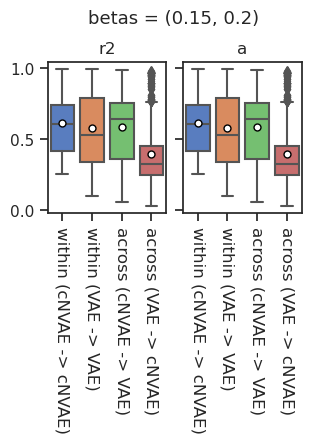
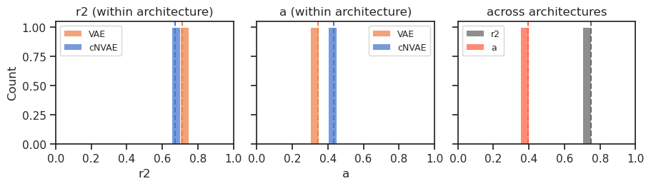

(04) Align (within & across) – lasso#
Motivation: Alignment scores (using permutation importance) within and across model classes.
# HIDE CODE
import os, sys
from IPython.display import display
# tmp & extras dir
git_dir = os.path.join(os.environ['HOME'], 'Dropbox/git')
extras_dir = os.path.join(git_dir, 'jb-MTMST/_extras')
fig_base_dir = os.path.join(git_dir, 'jb-MTMST/figs')
tmp_dir = os.path.join(git_dir, 'jb-MTMST/tmp')
# Code path
sys.path.insert(0, '/home/hadi/Documents/MTMST/code')
from vae.train_vae import TrainerVAE, ConfigTrainVAE
from vae.vae2d import VAE, ConfigVAE
from figures.fighelper import *
from analysis.glm import *
# warnings, tqdm, & style
warnings.filterwarnings('ignore', category=DeprecationWarning)
from rich.jupyter import print
%matplotlib inline
set_style()
Setup#
path = pjoin(tmp_dir, 'trainer_analysis')
pal_model, pal_cat = get_palette()
category = 'fixate1'
betas = [
0.01, 0.1, 0.15, 0.2, 0.3, 0.4, 0.5, 0.6,
0.7, 0.8, 0.9, 1.0, 1.5, 2.0, 5.0, 10.0,
]
files = sorted([
f for f in os.listdir(path) if category in f
and any(f"beta-{b}" in f for b in betas)
])
print(files)
[ 'fixate1_nf-420_beta-0.01_(2023_04_30,07:42).npy', 'fixate1_nf-420_beta-0.15_(2023_04_27,20:20).npy', 'fixate1_nf-420_beta-0.1_(2023_04_29,22:01).npy', 'fixate1_nf-420_beta-0.2_(2023_04_30,21:37).npy', 'fixate1_nf-420_beta-0.3_(2023_05_07,01:03).npy', 'fixate1_nf-420_beta-0.4_(2023_05_07,02:37).npy', 'fixate1_nf-420_beta-0.5_(2023_04_30,20:05).npy', 'fixate1_nf-420_beta-0.6_(2023_04_30,20:36).npy', 'fixate1_nf-420_beta-0.7_(2023_04_30,21:40).npy', 'fixate1_nf-420_beta-0.8_(2023_05_07,04:15).npy', 'fixate1_nf-420_beta-0.8_(2023_05_13,14:52).npy', 'fixate1_nf-420_beta-0.9_(2023_05_07,05:51).npy', 'fixate1_nf-420_beta-1.0_(2023_04_29,19:41).npy', 'fixate1_nf-420_beta-1.5_(2023_05_08,14:55).npy', 'fixate1_nf-420_beta-10.0_(2023_04_30,22:48).npy', 'fixate1_nf-420_beta-2.0_(2023_05_07,07:27).npy', 'fixate1_nf-420_beta-5.0_(2023_05_07,08:59).npy', 'vanilla_fixate1_nf-420_beta-0.01_(2023_05_13,21:48).npy', 'vanilla_fixate1_nf-420_beta-0.15_(2023_05_02,15:15).npy', 'vanilla_fixate1_nf-420_beta-0.1_(2023_05_10,21:14).npy', 'vanilla_fixate1_nf-420_beta-0.2_(2023_05_10,23:41).npy', 'vanilla_fixate1_nf-420_beta-0.3_(2023_05_13,07:46).npy', 'vanilla_fixate1_nf-420_beta-0.4_(2023_05_11,19:25).npy', 'vanilla_fixate1_nf-420_beta-0.5_(2023_05_07,02:51).npy', 'vanilla_fixate1_nf-420_beta-0.6_(2023_05_12,18:12).npy', 'vanilla_fixate1_nf-420_beta-0.7_(2023_05_12,08:53).npy', 'vanilla_fixate1_nf-420_beta-0.8_(2023_05_11,02:19).npy', 'vanilla_fixate1_nf-420_beta-0.9_(2023_05_13,20:45).npy', 'vanilla_fixate1_nf-420_beta-1.0_(2023_05_07,01:18).npy', 'vanilla_fixate1_nf-420_beta-1.5_(2023_05_14,14:16).npy', 'vanilla_fixate1_nf-420_beta-10.0_(2023_05_09,09:59).npy', 'vanilla_fixate1_nf-420_beta-2.0_(2023_05_09,08:19).npy', 'vanilla_fixate1_nf-420_beta-5.0_(2023_05_15,07:23).npy' ]
%%time
kl_diag = {}
z_vld, z_tst = {}, {}
for f in files:
x = pjoin(path, f)
x = np.load(x, allow_pickle=True).item()
z_vld[f] = x['data_vld']['z']
z_tst[f] = x['data_tst']['z']
kl_diag[f] = x['loss']['kl_diag']
CPU times: user 14.4 s, sys: 3min 54s, total: 4min 8s
Wall time: 5min 8s
All pairwise#
%%time
thres = 1e-3
looper = itertools.combinations(files, 2)
df = []
for f1, f2 in tqdm(looper, total=int(len(files) * (len(files) - 1) / 2)):
for src, tgt in [(f1, f2), (f2, f1)]:
*_, beta1, model1 = extract_info(src)
*_, beta2, model2 = extract_info(tgt)
x_vld, y_vld = z_vld[src], z_vld[tgt]
x_tst, y_tst = z_tst[src], z_tst[tgt]
# x_active = kl_diag[src] > thres
y_active = kl_diag[tgt] > thres
# zscore
x_mu = x_vld.mean(0, keepdims=True)
y_mu = y_vld.mean(0, keepdims=True)
x_sd = x_vld.std(0, keepdims=True)
y_sd = y_vld.std(0, keepdims=True)
x_vld = normalize_global(x_vld, x_mu, x_sd)
x_tst = normalize_global(x_tst, x_mu, x_sd)
y_vld = normalize_global(y_vld, y_mu, y_sd)
y_tst = normalize_global(y_tst, y_mu, y_sd)
# fit lasso
lasso = sk_linear.Lasso(
alpha=0.02,
random_state=0,
).fit(x_vld, y_vld[:, y_active])
pred = lasso.predict(x_tst)
# r2 score
r2 = sk_metric.r2_score(
y_pred=pred,
y_true=y_tst[:, y_active],
multioutput='raw_values',
)
# alignment
w = np.abs(lasso.coef_)
a = 1 - entropy_normalized(w, axis=w.ndim - 1)
df.append({
'src': [model1] * y_active.sum(),
'tgt': [model2] * y_active.sum(),
'cond': [
'within' if model1 == model2 else
'across'] * y_active.sum(),
'beta_src': [beta1] * y_active.sum(),
'beta_tgt': [beta2] * y_active.sum(),
'active_tgt': np.where(y_active)[0],
'r2': list(r2),
'a': [a] if isinstance(a, float) else a,
})
df = pd.DataFrame(merge_dicts(df))
df_fixed = []
for item in df:
item_fixed = {}
for k, v in item.items():
if isinstance(v, float):
item_fixed[k] = [v]
else:
item_fixed[k] = v
df_fixed.append(item_fixed)
df_fixed = pd.DataFrame(merge_dicts(df_fixed))
_ = save_obj(obj=df_fixed, file_name='df_lasso', save_dir=tmp_dir, mode='df')
[PROGRESS] 'df_lasso.df' saved at /home/hadi/Dropbox/git/jb-MTMST/tmp
df_mean = df_fixed.groupby([
'src', 'tgt', 'beta_src', 'beta_tgt',
]).mean().reset_index()
df_mean
| src | tgt | beta_src | beta_tgt | active_tgt | r2 | a | |
|---|---|---|---|---|---|---|---|
| 0 | VAE | VAE | 0.01 | 0.10 | 137.833333 | 0.770830 | 0.529696 |
| 1 | VAE | VAE | 0.01 | 0.15 | 205.777778 | 0.682630 | 0.518456 |
| 2 | VAE | VAE | 0.01 | 0.20 | 148.941176 | 0.655409 | 0.515293 |
| 3 | VAE | VAE | 0.01 | 0.30 | 174.076923 | 0.655608 | 0.536334 |
| 4 | VAE | VAE | 0.01 | 0.40 | 145.285714 | 0.551973 | 0.515124 |
| ... | ... | ... | ... | ... | ... | ... | ... |
| 988 | cNVAE | cNVAE | 10.00 | 0.90 | 265.153846 | 0.706500 | 0.530710 |
| 989 | cNVAE | cNVAE | 10.00 | 1.00 | 230.705882 | 0.641408 | 0.520348 |
| 990 | cNVAE | cNVAE | 10.00 | 1.50 | 217.538462 | 0.575708 | 0.513192 |
| 991 | cNVAE | cNVAE | 10.00 | 2.00 | 233.222222 | 0.736046 | 0.511236 |
| 992 | cNVAE | cNVAE | 10.00 | 5.00 | 249.222222 | 0.447739 | 0.532983 |
993 rows × 7 columns
df_median = df_fixed.groupby([
'src', 'tgt', 'beta_src', 'beta_tgt',
]).median().reset_index()
df_median
| src | tgt | beta_src | beta_tgt | active_tgt | r2 | a | |
|---|---|---|---|---|---|---|---|
| 0 | VAE | VAE | 0.01 | 0.10 | 131.0 | 0.799809 | 0.519251 |
| 1 | VAE | VAE | 0.01 | 0.15 | 227.5 | 0.690755 | 0.510229 |
| 2 | VAE | VAE | 0.01 | 0.20 | 151.0 | 0.702102 | 0.513355 |
| 3 | VAE | VAE | 0.01 | 0.30 | 169.0 | 0.601019 | 0.496387 |
| 4 | VAE | VAE | 0.01 | 0.40 | 160.0 | 0.416246 | 0.494298 |
| ... | ... | ... | ... | ... | ... | ... | ... |
| 988 | cNVAE | cNVAE | 10.00 | 0.90 | 272.0 | 0.771011 | 0.517792 |
| 989 | cNVAE | cNVAE | 10.00 | 1.00 | 257.0 | 0.820433 | 0.505035 |
| 990 | cNVAE | cNVAE | 10.00 | 1.50 | 194.0 | 0.722679 | 0.515887 |
| 991 | cNVAE | cNVAE | 10.00 | 2.00 | 243.0 | 0.736103 | 0.514670 |
| 992 | cNVAE | cNVAE | 10.00 | 5.00 | 207.0 | 0.291665 | 0.542545 |
993 rows × 7 columns
fig, axes = create_figure(1, 3, (9, 2.5), 'all', 'all', 'constrained')
for i, k in enumerate(['r2', 'a']):
for mod in ['VAE', 'cNVAE']:
_df_within = df_median.loc[
(df_median['src'] == mod) &
(df_median['tgt'] == mod)
]
x2p = _df_within[k]
sns.histplot(
x2p,
color=pal_model[mod],
bins=np.linspace(0, 1, 21),
label=mod,
ax=axes[i],
)
axes[i].axvline(x2p.mean(), color=pal_model[mod], ls='--')
axes[i].set_title(f"{k} (within architecture)")
axes[i].legend(fontsize=9)
_df_across = df_median.loc[
(df_median['src'] == 'cNVAE') &
(df_median['tgt'] == 'VAE')
]
for k, c in [('r2', 'dimgrey'), ('a', 'tomato')]:
x2p = _df_across[k]
sns.histplot(
x2p,
color=c,
label=k,
bins=np.linspace(0, 1, 21),
ax=axes[-1],
)
axes[-1].axvline(x2p.mean(), color=c, ls='--')
axes[-1].set_title('across architectures')
axes[-1].legend(fontsize=9)
axes[-1].set_xlim(0, 1)
axes[-1].set_xlabel('')
plt.show()
df_median
| src | tgt | beta_src | beta_tgt | active_tgt | r2 | a | |
|---|---|---|---|---|---|---|---|
| 0 | VAE | VAE | 0.01 | 0.10 | 131.0 | 0.799809 | 0.519251 |
| 1 | VAE | VAE | 0.01 | 0.15 | 227.5 | 0.690755 | 0.510229 |
| 2 | VAE | VAE | 0.01 | 0.20 | 151.0 | 0.702102 | 0.513355 |
| 3 | VAE | VAE | 0.01 | 0.30 | 169.0 | 0.601019 | 0.496387 |
| 4 | VAE | VAE | 0.01 | 0.40 | 160.0 | 0.416246 | 0.494298 |
| ... | ... | ... | ... | ... | ... | ... | ... |
| 988 | cNVAE | cNVAE | 10.00 | 0.90 | 272.0 | 0.771011 | 0.517792 |
| 989 | cNVAE | cNVAE | 10.00 | 1.00 | 257.0 | 0.820433 | 0.505035 |
| 990 | cNVAE | cNVAE | 10.00 | 1.50 | 194.0 | 0.722679 | 0.515887 |
| 991 | cNVAE | cNVAE | 10.00 | 2.00 | 243.0 | 0.736103 | 0.514670 |
| 992 | cNVAE | cNVAE | 10.00 | 5.00 | 207.0 | 0.291665 | 0.542545 |
993 rows × 7 columns
mod_pair = ('cNVAE', 'VAE')
beta_pair = (0.15, 0.20)
d2p = []
for k in ['r2', 'a']:
for mod in mod_pair:
v = np.concatenate([
_collect_vals(k, mod, mod, *beta_pair),
_collect_vals(k, mod, mod, *beta_pair[::-1]),
])
d2p.append({
'cond': ['within'] * len(v),
'model': [mod] * len(v),
'k': [k] * len(v),
'v': v,
})
v = np.concatenate([
_collect_vals(k, *mod_pair, beta_pair[0], beta_pair[0]),
_collect_vals(k, *mod_pair, beta_pair[1], beta_pair[1]),
_collect_vals(k, *mod_pair[::-1], beta_pair[0], beta_pair[0]),
_collect_vals(k, *mod_pair[::-1], beta_pair[1], beta_pair[1]),
_collect_vals(k, *mod_pair, *beta_pair),
_collect_vals(k, *mod_pair, *beta_pair[::-1]),
_collect_vals(k, *mod_pair[::-1], *beta_pair),
_collect_vals(k, *mod_pair[::-1], *beta_pair[::-1]),
])
d2p.append({
'cond': ['across'] * len(v),
'model': [None] * len(v),
'k': [k] * len(v),
'v': v,
})
d2p = pd.DataFrame(merge_dicts(d2p))
_pal = {
m: pal_model.get(m) for
m in ['cNVAE', 'VAE']
}
fig, axes = create_figure(1, 3, (4, 2.5), sharey='all', layout='constrained')
for i, k in enumerate(['r2', 'a']):
ax = axes.flat[i]
ax.set_title(f'{k} (within)')
sns.boxplot(
data=d2p.loc[
(d2p['k'] == k) &
(d2p['cond'] == 'within')],
x='model',
y='v',
hue='model',
order=_pal,
palette=_pal,
dodge=False,
showmeans=True,
meanprops={
'marker': 'o',
'markerfacecolor': 'white',
'markeredgecolor': 'k',
'markersize': 5,
'alpha': 1.0},
ax=ax,
)
ax.set(xlabel='', ylabel='')
leg = ax.get_legend()
leg.remove()
_pal = {
'r2': 'dimgrey',
'a': 'tomato',
}
ax = axes.flat[-1]
ax.set_title('across')
sns.boxplot(
data=d2p.loc[d2p['cond'] == 'across'],
x='k',
y='v',
hue='k',
order=_pal,
palette=_pal,
dodge=False,
showmeans=True,
meanprops={
'marker': 'o',
'markerfacecolor': 'white',
'markeredgecolor': 'k',
'markersize': 5,
'alpha': 1.0},
ax=ax,
)
ax.set(xlabel='', ylabel='')
leg = ax.get_legend()
leg.remove()
axes[-1].set_ylim(0, 1.03)
plt.show()
def _collect_vals(k, m1, m2, b1, b2):
return df_fixed.loc[
(df_fixed['src'] == m1) &
(df_fixed['tgt'] == m2) &
(df_fixed['beta_src'] == b1) &
(df_fixed['beta_tgt'] == b2),
k
].values
def _get_d2p(m1, m2, beta_pair):
d2p = []
mod_pair = (m1, m2)
for k in ['r2', 'a']:
for m in mod_pair:
v = np.concatenate([
_collect_vals(k, m, m, *beta_pair),
_collect_vals(k, m, m, *beta_pair[::-1]),
])
d2p.append({
'cond': [f"within ({m} -> {m})"] * len(v),
'k': [k] * len(v),
'v': v,
})
# across: m1 -> m2
v = np.concatenate([
_collect_vals(k, m1, m2, beta_pair[0], beta_pair[0]),
_collect_vals(k, m1, m2, beta_pair[1], beta_pair[1]),
# _collect_vals(k, m1, m2, *beta_pair),
# _collect_vals(k, m1, m2, *beta_pair[::-1]),
])
d2p.append({
'cond': [f'across ({m1} -> {m2})'] * len(v),
'k': [k] * len(v),
'v': v,
})
# across: m2 -> m1
v = np.concatenate([
_collect_vals(k, m2, m1, beta_pair[0], beta_pair[0]),
_collect_vals(k, m2, m1, beta_pair[1], beta_pair[1]),
# _collect_vals(k, m1, m2, *beta_pair),
# _collect_vals(k, m1, m2, *beta_pair[::-1]),
])
d2p.append({
'cond': [f'across ({m2} -> {m1})'] * len(v),
'k': [k] * len(v),
'v': v,
})
d2p = pd.DataFrame(merge_dicts(d2p))
return d2p
def _show(d2p, figsize=(3, 4), display=True):
_pal = {
f"within ({m} -> {m})": pal_model.get(m)
for m in ['cNVAE', 'VAE']
}
_pal['across (cNVAE -> VAE)'] = sns.color_palette('muted')[2]
_pal['across (VAE -> cNVAE)'] = sns.color_palette('muted')[3]
fig, axes = create_figure(1, 2, figsize, sharey='all', layout='constrained')
for i, k in enumerate(['r2', 'a']):
ax = axes.flat[i]
ax.set_title(k)
sns.boxplot(
data=d2p,
x='cond',
y='v',
hue='cond',
order=_pal,
palette=_pal,
dodge=False,
showmeans=True,
meanprops={
'marker': 'o',
'markerfacecolor': 'white',
'markeredgecolor': 'k',
'markersize': 5,
'alpha': 1.0},
ax=ax,
)
ax.tick_params(axis='x', labelsize=12, rotation=-90)
ax.tick_params(axis='y', labelsize=11)
ax.set(xlabel='', ylabel='')
leg = ax.get_legend()
leg.remove()
if display:
plt.show()
else:
plt.close()
return fig, axes
mod_pair = ('cNVAE', 'VAE')
for i in range(len(betas) - 1):
beta_pair = (betas[i], betas[i + 1])
d2p = _get_d2p(*mod_pair, beta_pair)
fig, axes = _show(d2p, display=False)
fig.suptitle(f"betas = {beta_pair}", fontsize=13, x=0.56, y=1.07)
display(fig)

mod_pair = ('cNVAE', 'VAE')
beta_pair = (0.15, 0.2)
d2p = _get_d2p(*mod_pair, beta_pair)
fig, axes = _show(d2p)
mod_pair = ('cNVAE', 'VAE')
beta_pair = (0.10, 0.15)
fig, axes = _show(_get_d2p(mod_pair, beta_pair))
mod_pair = ('cNVAE', 'VAE')
beta_pair = (0.2, 0.3)
fig, axes = _show(_get_d2p(mod_pair, beta_pair))
_pal = {
m: pal_model.get(m) for
m in ['cNVAE', 'VAE']
}
fg = sns.catplot(
data=d2p.loc[d2p['cond'] == 'within'],
col='k',
x='model',
y='v',
hue='model',
palette=_pal,
order=_pal,
legend='auto',
legend_out=True,
height=4,
aspect=0.5,
kind='box',
dodge=False,
width=0.6,
)
fg.axes[0, 0].set(ylim=(0, 1), ylabel='')
for ax in fg.axes.ravel():
t = ax.get_title()
t = t.replace(' | ', '\n')
ax.set_title(t, fontsize=15, y=1.05)
ax.set_xlabel('')
plt.show()
_pal = {'a': 'tomato', 'r2': 'dimgrey'}
fg = sns.catplot(
data=d2p.loc[d2p['cond'] == 'across'],
col='k',
x='k',
y='v',
hue='k',
palette=_pal,
order=_pal,
legend='auto',
legend_out=True,
height=4,
aspect=0.5,
kind='box',
dodge=False,
width=0.6,
)
fg.axes[0, 0].set(ylim=(0, 1), ylabel='')
for ax in fg.axes.ravel():
t = ax.get_title()
t = t.replace(' | ', '\n')
ax.set_title(t, fontsize=15, y=1.05)
ax.set_xlabel('')
plt.show()
fig, axes = create_figure(1, 3, (9, 2.5), 'all', 'all', 'constrained')
for i, k in enumerate(['r2', 'a']):
for mod in ['VAE', 'cNVAE']:
_df_within = df_median.loc[
(df_median['src'] == mod) &
(df_median['tgt'] == mod) &
(df_median['beta_src'] == 0.15) &
(df_median['beta_tgt'] == 0.20)
]
x2p = _df_within[k]
sns.histplot(
x2p,
color=pal_model[mod],
bins=np.linspace(0, 1, 21),
label=mod,
ax=axes[i],
)
axes[i].axvline(x2p.mean(), color=pal_model[mod], ls='--')
axes[i].set_title(f"{k} (within architecture)")
axes[i].legend(fontsize=9)
_df_across = df_median.loc[
(df_median['src'] == 'cNVAE') &
(df_median['tgt'] == 'VAE') &
(df_median['beta_src'] == 0.15) &
(df_median['beta_tgt'] == 0.20)
]
for k, c in [('r2', 'dimgrey'), ('a', 'tomato')]:
x2p = _df_across[k]
sns.histplot(
x2p,
color=c,
label=k,
bins=np.linspace(0, 1, 21),
ax=axes[-1],
)
axes[-1].axvline(x2p.mean(), color=c, ls='--')
axes[-1].set_title('across architectures')
axes[-1].legend(fontsize=9)
axes[-1].set_xlim(0, 1)
axes[-1].set_xlabel('')
plt.show()

cNVAE vs. cNVAE#
f1 = 'fixate1_nf-420_beta-0.9_(2023_05_07,05:51).npy'
f2 = 'fixate1_nf-420_beta-1.0_(2023_04_29,19:41).npy'
x_vld, y_vld = z_vld[f1], z_vld[f2]
x_tst, y_tst = z_tst[f1], z_tst[f2]
x_active = kl_diag[f1] > thres
y_active = kl_diag[f2] > thres
x_active.sum(), y_active.sum()
(13, 17)
zscore?#
x_mu, x_sd = x_vld.mean(0, keepdims=True), x_vld.std(0, keepdims=True)
y_mu, y_sd = y_vld.mean(0, keepdims=True), y_vld.std(0, keepdims=True)
x_vld = normalize_global(x_vld, x_mu, x_sd)
x_tst = normalize_global(x_tst, x_mu, x_sd)
y_vld = normalize_global(y_vld, y_mu, y_sd)
y_tst = normalize_global(y_tst, y_mu, y_sd)
list(zip(x_mu[0, x_active], x_sd[0, x_active]))
[(10.9228325, 0.0034539725),
(1.2925807, 11.253091),
(1.4717253, 2.4600735),
(1.1433208, 22.577755),
(0.11405279, 23.527708),
(0.34474313, 19.828737),
(0.33880973, 17.606865),
(-0.104978874, 13.026103),
(0.03299829, 11.929558),
(-0.03312666, 11.03442),
(-0.0653676, 11.147402),
(-0.0674578, 6.726724),
(0.088772036, 4.75526)]
list(zip(y_mu[0, y_active], y_sd[0, y_active]))
[(-0.005004815, 0.79182017),
(0.07065298, 1.3051615),
(0.26179007, 0.38478315),
(-0.24238503, 34.737404),
(13.093467, 10.493587),
(2.8949993, 31.544039),
(-0.44077933, 33.955654),
(0.12114962, 48.914455),
(-0.47191173, 26.270683),
(-0.51305187, 26.064564),
(-0.1677357, 13.249663),
(0.100134954, 3.1889513),
(1.6145816, 26.434069),
(0.027111245, 22.620485),
(-0.10383753, 15.6840515),
(-0.024217783, 12.807361),
(0.13979107, 3.402484)]
np.where(x_active)[0], np.where(y_active)[0]
(array([ 60, 127, 154, 213, 236, 245, 272, 290, 336, 349, 366, 386, 413]),
array([ 2, 20, 45, 139, 146, 185, 220, 243, 257, 272, 290, 311, 316,
336, 357, 370, 413]))
np.round(x_vld.mean(0)[x_active], 1), np.round(x_tst.mean(0)[x_active], 1)
(array([-0.9, -0. , -0. , 0. , -0. , -0. , 0. , -0. , 0. , -0. , 0. ,
-0. , -0. ], dtype=float32),
array([-0.9, -0. , -0. , -0. , 0. , -0. , 0. , 0. , -0. , 0. , 0. ,
0. , -0. ], dtype=float32))
np.round(y_vld.mean(0)[y_active], 1), np.round(y_tst.mean(0)[y_active], 1)
(array([ 0., 0., -0., 0., 0., -0., 0., -0., 0., -0., 0., -0., 0.,
-0., -0., 0., 0.], dtype=float32),
array([ 0., -0., 0., 0., 0., -0., -0., -0., -0., 0., 0., 0., -0.,
-0., -0., -0., -0.], dtype=float32))
%%time
lasso = sk_linear.Lasso(
alpha=0.02,
random_state=0,
).fit(x_vld, y_vld[:, y_active])
CPU times: user 9min 2s, sys: 1.71 s, total: 9min 4s
Wall time: 29.6 s
pred = lasso.predict(x_tst)
r = 1 - sp_dist.cdist(
XA=pred.T,
XB=y_tst[:, y_active].T,
metric='correlation',
)
r2 = sk_metric.r2_score(
y_pred=pred,
y_true=y_tst[:, y_active],
multioutput='raw_values',
)
r2.mean()
0.8644936249853196
w = np.abs(lasso.coef_)
w.shape
(17, 420)
plt.plot(w[16])
[<matplotlib.lines.Line2D at 0x7f06dd649b20>]
from analysis.linear import compute_dci
d, c = compute_dci(w)
d, c
(0.7384311, 0.6046756)
a = 1 - entropy_normalized(w, axis=1)
a.shape
(17,)
a
array([0.51980054, 0.5071207 , 0.48669797, 0.46676618, 0.49387693,
0.7546047 , 0.6341338 , 0.76929235, 0.71435153, 0.70017445,
0.5991161 , 0.5486815 , 0.6468854 , 0.5411789 , 0.6409993 ,
0.6258725 , 0.6299315 ], dtype=float32)
sns.boxplot(a);
np.median(a), np.mean(a)
(0.6258725, 0.6046756)
VAE vs. VAE#
f1 = 'vanilla_fixate1_nf-420_beta-0.9_(2023_05_13,20:45).npy'
f2 = 'vanilla_fixate1_nf-420_beta-1.0_(2023_05_07,01:18).npy'
x_vld, y_vld = z_vld[f1], z_vld[f2]
x_tst, y_tst = z_tst[f1], z_tst[f2]
thres = 1e-3
x_active = kl_diag[f1] > thres
y_active = kl_diag[f2] > thres
x_active.sum(), y_active.sum()
(6, 6)
zscore?#
x_mu, x_sd = x_vld.mean(0, keepdims=True), x_vld.std(0, keepdims=True)
y_mu, y_sd = y_vld.mean(0, keepdims=True), y_vld.std(0, keepdims=True)
x_vld = normalize_global(x_vld, x_mu, x_sd)
x_tst = normalize_global(x_tst, x_mu, x_sd)
y_vld = normalize_global(y_vld, y_mu, y_sd)
y_tst = normalize_global(y_tst, y_mu, y_sd)
list(zip(x_mu[0, x_active], x_sd[0, x_active]))
[(0.00055062195, 0.79539186),
(0.0031704667, 0.9985981),
(-0.0046624793, 1.003305),
(-0.00025729055, 0.7545888),
(-0.0064228945, 0.8589338),
(0.007941236, 1.0024639)]
list(zip(y_mu[0, y_active], y_sd[0, y_active]))
[(0.0042606993, 1.000869),
(-0.0060058055, 0.9988035),
(0.008227088, 0.8725992),
(0.006092067, 0.7681422),
(-0.003597806, 1.0003748),
(0.0019306749, 0.7283047)]
np.where(x_active)[0], np.where(y_active)[0]
(array([ 21, 70, 151, 262, 292, 315]), array([ 51, 86, 283, 316, 317, 413]))
np.round(x_vld.mean(0)[x_active], 1), np.round(x_tst.mean(0)[x_active], 1)
(array([ 0., -0., -0., 0., -0., -0.], dtype=float32),
array([ 0., -0., 0., -0., 0., -0.], dtype=float32))
np.round(y_vld.mean(0)[y_active], 1), np.round(y_tst.mean(0)[y_active], 1)
(array([ 0., -0., -0., -0., -0., -0.], dtype=float32),
array([-0., 0., -0., -0., 0., -0.], dtype=float32))
%%time
lasso = sk_linear.Lasso(
alpha=0.02,
random_state=0,
).fit(x_vld, y_vld[:, y_active])
CPU times: user 33.4 s, sys: 232 ms, total: 33.7 s
Wall time: 2.25 s
pred = lasso.predict(x_tst)
r = 1 - sp_dist.cdist(
XA=pred.T,
XB=y_tst[:, y_active].T,
metric='correlation',
)
r2 = sk_metric.r2_score(
y_pred=pred,
y_true=y_tst[:, y_active],
multioutput='raw_values',
)
r2.mean()
0.9377286456016242
np.median(r2)
0.9476974158052032
w = np.abs(lasso.coef_)
w.shape
(6, 420)
plt.plot(w[3])
[<matplotlib.lines.Line2D at 0x7f06de060130>]
from analysis.linear import compute_dci
d, c = compute_dci(w)
d, c
(0.6954806, 0.7640411)
a = 1 - entropy_normalized(w, axis=1)
a.shape
(6,)
a
array([1. , 0.89184576, 0.5812521 , 0.6764972 , 0.8920851 ,
0.54256606], dtype=float32)
sns.boxplot(a);
np.median(a)
0.78417146